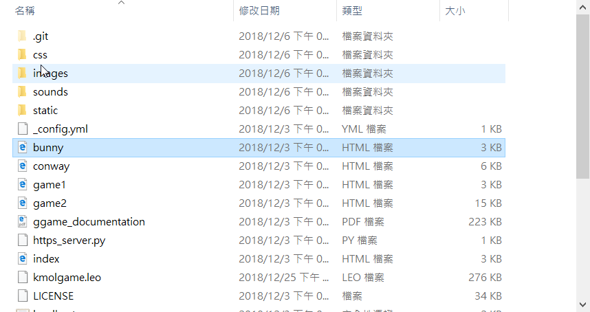
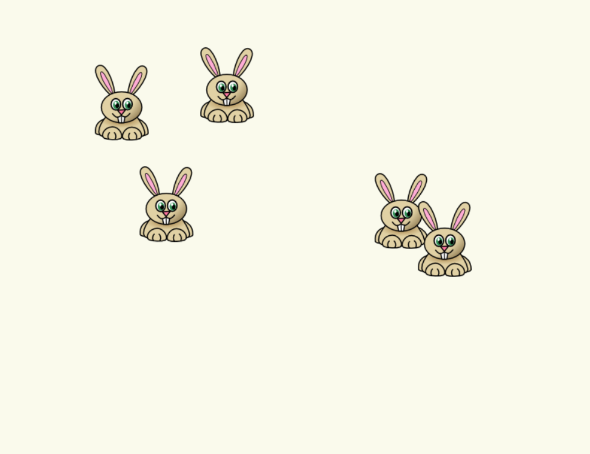

剛開始有老師給個範例ggame 來讓我們了解

裡面有很多的範例像是完整的game1 如下
兔子跳+滑鼠拖移
from ggame import App, ImageAsset, Sprite, MouseEvent
from random import random, randint
class Bunny(Sprite):
asset = ImageAsset("images/bunny.png")
def __init__(self, position):
super().__init__(Bunny.asset, position)
# register mouse events
App.listenMouseEvent(MouseEvent.mousedown, self.mousedown)
App.listenMouseEvent(MouseEvent.mouseup, self.mouseup)
App.listenMouseEvent(MouseEvent.mousemove, self.mousemove)
self.dragging = False
def step(self):
"""
Every now and then a bunny hops...
"""
if random() < 0.01:
self.x += randint(-20,20)
self.y += randint(-20,20)
def mousedown(self, event):
# capture any mouse down within 50 pixels
self.deltax = event.x - (self.x + self.width//2)
self.deltay = event.y - (self.y + self.height//2)
if abs(self.deltax) < 50 and abs(self.deltay) < 50:
self.dragging = True
# only drag one bunny at a time - consume the event
event.consumed = True
def mousemove(self, event):
if self.dragging:
self.x = event.x - self.deltax - self.width//2
self.y = event.y - self.deltay - self.height//2
event.consumed = True
def mouseup(self, event):
if self.dragging:
self.dragging = False
event.consumed = True
class DemoApp(App):
def __init__(self):
super().__init__()
for i in range(10):
Bunny((randint(50,self.width),randint(50,self.height)))
def step(self):
"""
Override step to perform action on each frame update
"""
for bunny in self.spritelist:
bunny.step()
# Create the app
app = DemoApp()
# Run the app
app.run()

我進行了一些的改動
def step(self):
"""
Every now and then a bunny hops...
"""
if random() < 0.01:
self.x += randint(-20,20)
self.y += randint(-20,20)
改成了如下
def step(self):
"""
Every now and then a bunny hops...
"""
if random() < 0.01:
self.x += randint(-40,40)
self.y += randint(-40,40)
兔子的跳動範圍就變大了
改成如下
def step(self):
"""
Every now and then a bunny hops...
"""
if random() < 0.04:
self.x += randint(-20,20)
self.y += randint(-20,20)
兔子的跳動頻率就變快了
所以我思考了可以做一個捕捉的遊戲，進行更改兔子的動作而加深難度，我也想到了可以把兔子移動到某一個東西上面，就可以更改了一些狀況。
我讓滑鼠點兔子時只能點兔子的中心小範圍的話要改，如下是滑鼠的點擊像素範圍
def mousedown(self, event):
# capture any mouse down within 50 pixels
self.deltax = event.x - (self.x + self.width//2)
self.deltay = event.y - (self.y + self.height//2)
if abs(self.deltax) < 40 and abs(self.deltay) < 40:
self.dragging = True
# only drag one bunny at a time - consume the event
event.consumed = True
改成如下
def mousedown(self, event):
# capture any mouse down within 50 pixels
self.deltax = event.x - (self.x + self.width//2)
self.deltay = event.y - (self.y + self.height//2)
if abs(self.deltax) < 20 and abs(self.deltay) < 20:
self.dragging = True
# only drag one bunny at a time - consume the event
event.consumed = True
這樣子就可以讓兔子更難的被點中了